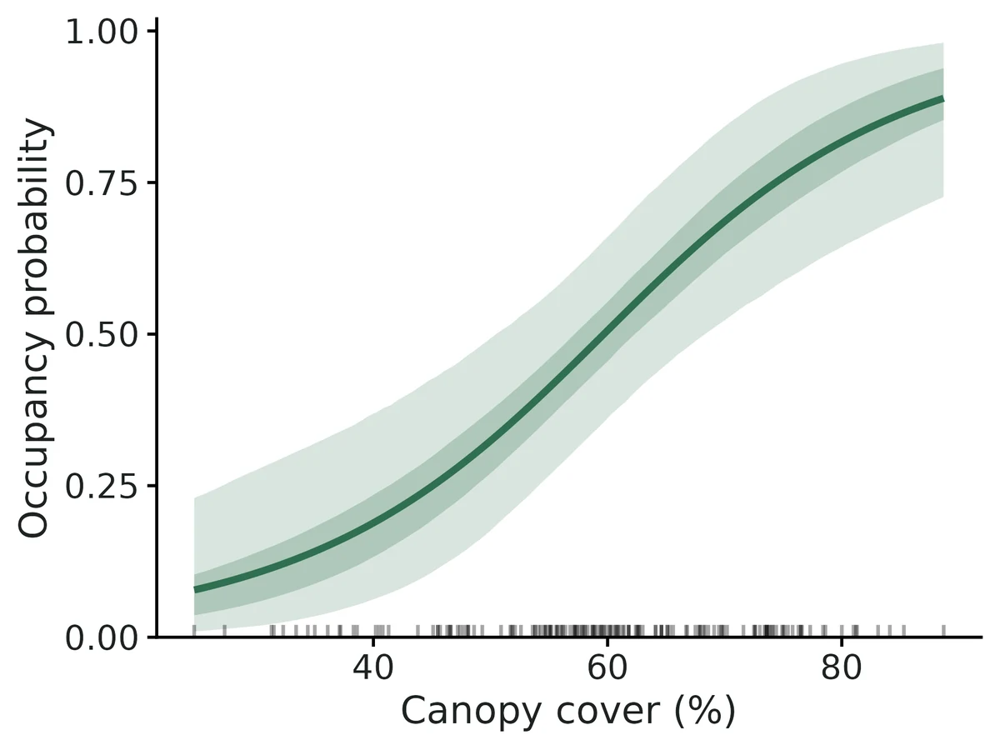
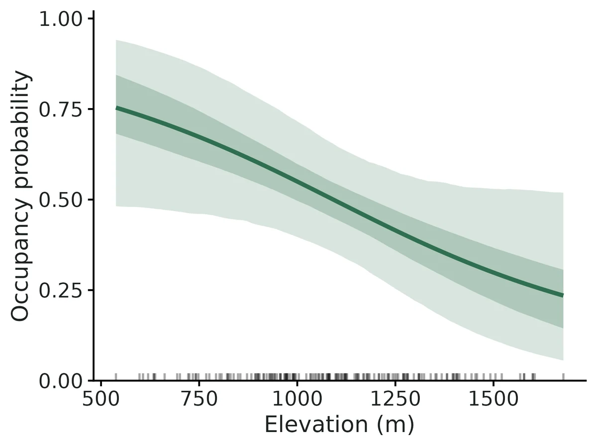
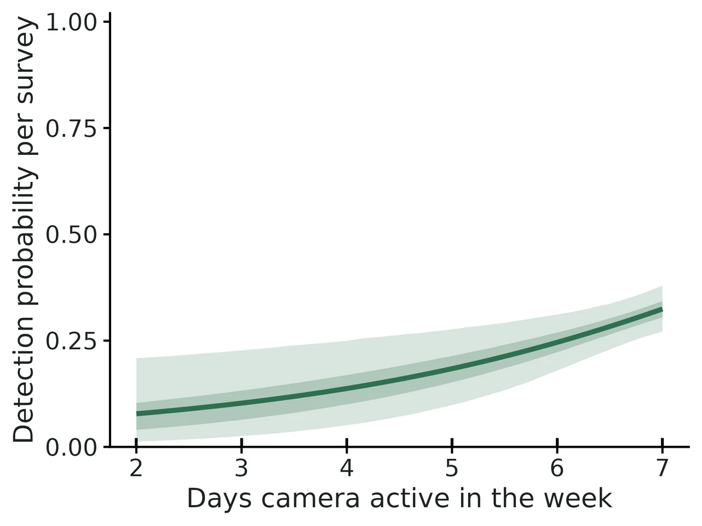
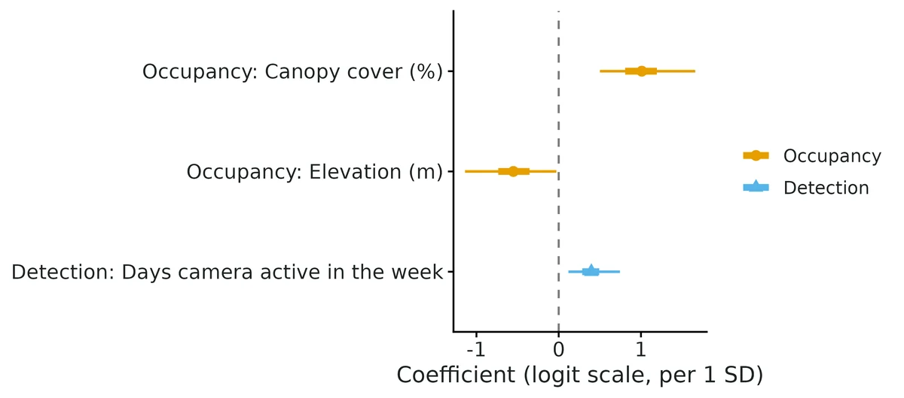

Spatial, multi-species and integrated occupancy (spOccupancy)
Where does the species (or each species of a community) occur, which habitat covariates are associated with occurrence, and is there residual spatial clustering, after accounting for imperfect detection?
Is this the right analysis?
Use it when
Detection/non-detection surveys repeated at sites with known coordinates, when (a) occupancy is likely spatially clustered beyond what the covariates explain (single species, spPGOcc), (b) several species were recorded at the same sites and community-level responses or species richness are wanted (msPGOcc, sfMsPGOcc), or (c) the same species was surveyed with two or more methods (point counts + ARUs, cameras + sign surveys) that should be analysed together (intPGOcc).
Not for
Single-species non-spatial analyses with likelihood output or dynamic (multi-season) occupancy (use occu-single); species interactions (occu-rota / occu-waddle); counts or abundance (N-mixture); estimating the spatial range itself precisely (weakly identified, see Known limits); presence-only data (sdm-presence-only); false-positive detections.
The data you need
Long detection table (site, survey, detected 0/1 [, species] [, method/source] [, survey covariates]); site table with projected x/y coordinates (m or km) and site covariates; optional prediction grid (x, y, same covariates).
What the example's main data file looks like:
| station | week | start_date | days_active | detected |
|---|---|---|---|---|
| CAM-001 | 1 | 2024-06-12 | 7 | 0 |
| CAM-001 | 2 | 2024-06-19 | 7 | 0 |
| CAM-001 | 3 | 2024-06-26 | 7 | 0 |
| CAM-001 | 4 | 2024-07-03 | 7 | 0 |
| CAM-001 | 5 | 2024-07-10 | 7 | 0 |
Not sure? Use the finder to compare modules.
The worked example
Fisher occupancy, canopy cover and elevation with residual spatial clustering (simulated camera-trap survey, 160 stations)
The question: Is fisher occupancy associated with canopy cover and elevation, allowing for missed detections and for residual spatial clustering, and where in the 30 x 30 km block are fishers likely to occur?
The data are simulated, so the true answer is known and the analysis can be checked against it.
What the researcher typed
I have fisher camera-trap data from 160 stations in the western Cascades, summer 2024, up to 6 weekly occasions per camera (some cameras died early). fisher_detections.csv has one row per station-week (station, week, start date, days the camera worked, detected 1/0). camera_stations.csv has UTM coordinates, canopy cover (%), elevation (m) and ownership. prediction_grid_1km.csv is a 1-km grid with the same covariates. Is fisher occupancy related to canopy cover and elevation? Please account for fishers we missed and for spatial clustering, and make a map of predicted occupancy. I need results and figures for a paper.
Run it yourself
Download the example data below and unzip it.
Open the unzipped folder in Claude Code (see Install).
Paste the prompt above. The agent checks the files, writes a plan, runs planted truth, fits the model and writes the report. You can compare your results with the ones below.
Contains fisher_detections.csv, camera_stations.csv, prediction_grid_1km.csv, the settings file (config.yaml), a description of the data and a step-by-step walkthrough.
Study design details
| model | spPGOcc (spatial single-species occupancy, NNGP 15 neighbours) |
|---|---|
| n sites | 160 |
| max surveys | 6 |
| surveys done | 903 |
| prop missing | 0.059 |
| surveys per site | 6: 138; 5: 4; 4: 6; 3: 7; 2: 5 |
| extent km | 30 |
| site spacing km | 1.0-40.3 (5% quantile 4.2) |
| n detections | 140 |
| n sites detected | 70 |
| naive occupancy | 0.4375 |
| prediction cells | 900 |
| mcmc | 3 chains x 50000 iter, burn-in 20000, thin 20 |
Results from the example data

In plain language
- Occupancy probability at average covariate values and zero spatial effect is 0.50 (95% CrI 0.36 to 0.65).
- Averaged over the 160 surveyed sites, mean occupancy probability is 0.51 (95% CrI 0.43 to 0.59), and the estimated proportion of surveyed sites that are occupied is 0.51 (95% CrI 0.46 to 0.57), compared with 0.44 of sites where the species was detected at least once (the difference is the correction for missed detections).
- Occupancy and Canopy cover (%): each 1-SD increase (1 SD = 12.9 in original units) multiplies the odds of occupancy by 2.75 (95% CrI 1.65 to 5.26); predicted occupancy goes from 0.28 at 1 SD below the mean to 0.73 at 1 SD above it (other covariates at their means). Per 10-unit increase the odds of occupancy are multiplied by 2.19 (95% CrI 1.48 to 3.64).
- Occupancy and Elevation (m): each 1-SD increase (1 SD = 246 in original units) multiplies the odds of occupancy by 0.58 (95% CrI 0.32 to 0.97); predicted occupancy goes from 0.63 at 1 SD below the mean to 0.37 at 1 SD above it. Per 200-unit increase the odds of occupancy are multiplied by 0.64 (95% CrI 0.40 to 0.98).
- Detection: when the species is present, a single survey detects it with probability 0.30 (95% CrI 0.25 to 0.35) (at average survey conditions).
- Detection and Days camera active in the week: per 1-unit increase the odds of detection are multiplied by 1.48 (95% CrI 1.12 to 2.09). This is a detection effect (how easily the species is found), not a habitat effect.
- The residual spatial variance is 0.95 (95% CrI 0.17 to 3.89) on the logit scale; its prior alone gives a 95% interval of 0.18 to 4.13, so the data add little information: these numbers mostly restate the prior and do not show whether residual clustering is strong or weak.
- Model check: posterior predictive p-values (Freeman-Tukey, by site) are 0.55; no sign of lack of fit.
- All effects are associations from observational data, not causal effects.
More figures



Figures are the module's default publication figures, reduced for the web. The report also saves them as PDF and full-resolution PNG.
Planted truth at the example's design
Before trusting the example's results, the module was run on many simulated data sets with the same design and known true values. Each row is one quantity: did the method get it back? (What the thresholds are.)
DONE for the estimands that answer the question (covariate effects, occupancy, detection, mean occupancy, proportion occupied): all pass planted truth at this design (100/100 converged), the real fit converged and passed the PPC; spatial variance and range fail recovery on bias and are reported descriptively only, not interpreted.
7 of 9 rows pass.
| Quantity | True value | Average estimate | Bias | Coverage | Result |
|---|---|---|---|---|---|
| occupancy_prob | 0.426 | 0.448 | +5.1% | 0.93 | ✓ PASS |
| psi_beta_canopy_cover_pct | 0.9 | 0.974 | +8.2% | 0.99 | ✓ PASS |
| psi_beta_elevation_m | -0.4 | -0.446 | -11.5% | 0.95 | ✓ PASS |
| detection_prob | 0.285 | 0.281 | -1.3% | 0.96 | ✓ PASS |
| p_beta_days_active | 0.38 | 0.38 | +0.1% | 0.9 | ✓ PASS |
| mean_occupancy | 0.445 | 0.461 | +3.6% | 0.95 | ✓ PASS |
| prop_sites_occupied | 0.452 | 0.461 | +2.0% | 0.97 | ✓ PASS |
| spatial_variance | 1 | 1.48 | +48.1% | 1 | ✗ FAIL |
| effective_range_km | 8 | 9.7 | +21.3% | 1 | ✗ FAIL |
Limits that matter
- Spatial variance and effective range are not recoverable at this design (+48% and +21% bias in planted truth) and their posteriors restate the priors; read the spatial maps as residual smoothing, not a measured clustering scale.
- Occupancy slopes lean away from zero at modest sample sizes (+8% canopy, +11.5% elevation in planted truth; 10-28% at 100-120 sites in VALIDATION.md; ~10% inflation if no real clustering). Trust direction; report the non-spatial PGOcc fit alongside (canopy 0.87 vs 1.01 per SD).
- Low power for the elevation effect: an effect of -0.40 per SD was detected in only 33% of replicates; the real-data interval only just excludes zero.
- Spatial confounding: smooth covariates such as elevation (15-km range) can have part of their effect absorbed by the spatial term (VALIDATION.md: -20% for a 90%-spatial covariate).
- Recovery simulator differs from the example generator: independent covariates, missing weeks at random rather than camera failures, standard-normal days_active.
- Closure over the season, no false positives and no unmodelled detection heterogeneity are assumed; stations 1 km apart may share individuals, so occupancy is better read as use.
- Core gate caveat: the '>= 90% converged' clause cannot fail for non-convergence; convergence (100/100) was counted by hand.
Engine, references and full details
Engine: spOccupancy 0.8.2 (Polya-Gamma Gibbs samplers; NNGP spatial random effects).
References
- Doser JW, Finley AO, Kery M, Zipkin EF (2022) spOccupancy: An R package for single-species, multi-species, and integrated spatial occupancy models. Methods in Ecology and Evolution 13:1670-1678. doi:10.1111/2041-210X.13897
- Doser JW, Finley AO, Banerjee S (2023) Joint species distribution models with imperfect detection for high-dimensional spatial data. Ecology 104(9):e4137.
- Doser JW, Leuenberger W, Sillett TS, Hallworth MT, Zipkin EF (2022) Integrated community occupancy models: a framework to assess occurrence and biodiversity dynamics using multiple data sources. Methods in Ecology and Evolution 13. doi:10.1111/2041-210X.13811
- Datta A, Banerjee S, Finley AO, Gelfand AE (2016) Hierarchical nearest-neighbor Gaussian process models for large geostatistical datasets. JASA 111:800-812.
- Polson NG, Scott JG, Windle J (2013) Bayesian inference for logistic models using Polya-Gamma latent variables. JASA 108:1339-1349.
- Dorazio RM, Royle JA (2005) Estimating size and composition of biological communities by modeling the occurrence of species. JASA 100:389-398.
- MacKenzie DI et al. (2002) Estimating site occupancy rates when detection probabilities are less than one. Ecology 83:2248-2255.
- Banerjee S, Carlin BP, Gelfand AE (2014) Hierarchical Modeling and Analysis for Spatial Data, 2nd ed. CRC Press.
- spOccupancy vignettes (model fitting; factor models), https://doserlab.com/files/spoccupancy-web/